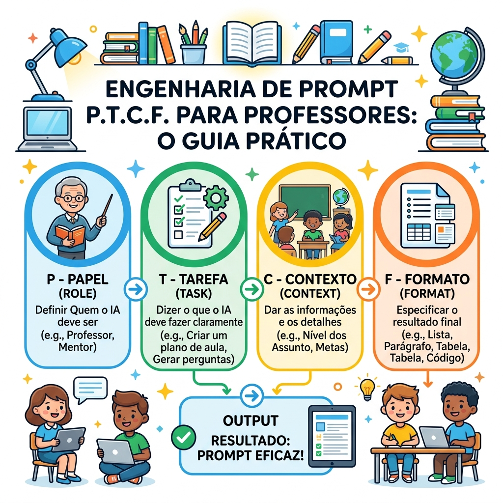
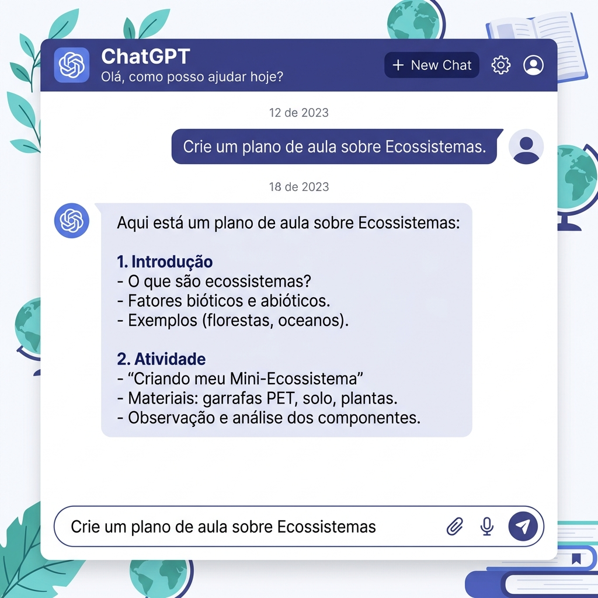
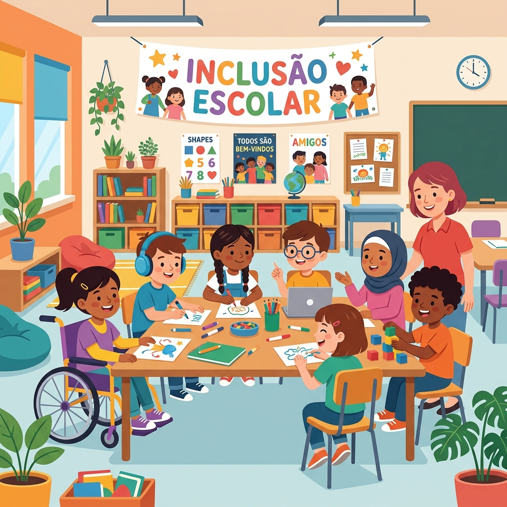

Manual Prático, Acolhedor e Definitivo: Do Caos do Planejamento ao Fim de Semana Livre.
Sem Jargões
Feito de professor para professor
100% Gratuito
Estratégias reais antipagamento
Inclusão Real
TEA, TDAH, Dislexia e DUA
Material Didático Oficial do Curso
12 Capítulos Estruturados · 4 Encontros Síncronos de Oficinas (8h) + Aplicação em Sala (32h)
Edição 2026 · Atualizada e Aprofundada
DeepSeek R1/V3 · Z.ai · NotebookLM · Canva Edu · Diffit · Curipod
Bem-vindo à formação mais acolhedora e prática sobre Inteligência Artificial aplicada à educação básica pública. Se você sente que os dias estão curtos demais, que as exigências burocráticas aumentam a cada bimestre e que os relatórios e correções devoram os seus finais de semana com a família, saiba: você não está sozinho(a).
Nosso objetivo com esta apostila não é ensinar matemática de computadores nem formar programadores de software. Nosso compromisso é puramente pedagógico e humano: colocar a tecnologia a favor do seu bem-estar e da qualidade das suas aulas. A IA nunca substituirá o olhar sensível do professor, o afeto no acolhimento de uma criança ou a sabedoria de conduzir um debate na sala de aula. Mas ela pode — e vai — assumir o trabalho braçal, repetitivo e cansativo da digitação, do rascunho e da formatação.
A apostila está dividida em 12 Capítulos Completos, organizados para conduzir você passo a passo, do primeiro clique até a criação de um projeto de intervenção pedagógica que transformará sua rotina escolar.
MÓDULO I: FUNDAMENTOS E LINGUAGEM (Encontro 1)
Capítulo 1: Entendendo a IA no Cotidiano Escolar (WhatsApp, LLMs, Gratuitas e Limites)
Capítulo 2: A Arte de Conversar com a IA (Fórmula P.T.C.F. e 15 Prompts Prontos)
MÓDULO II: ROTINA E DOCUMENTOS OFICIAIS (Encontro 2)
Capítulo 3: Organização Profissional, Pareceres Descritivos e Atas de Reunião
Capítulo 4: Planejamento de Aulas e Domínio da BNCC sem Mistério
Capítulo 5: Leitura Inteligente de Documentos em PDF (NotebookLM e Kimi AI)
MÓDULO III: MATERIAIS, INCLUSÃO E VISUAIS (Encontro 3)
Capítulo 6: Materiais Didáticos Dinâmicos, Jogos e Fichas de Reforço
Capítulo 7: Inclusão Escolar, DUA, TEA, TDAH, Dislexia e Diffit em 3 Níveis
Capítulo 8: Recursos Visuais, Canva Pro Grátis e Aulas Interativas com Curipod
MÓDULO IV: AVALIAÇÕES, ÉTICA E PROJETO FINAL (Encontro 4)
Capítulo 9: Avaliações Formativas, Provas no DeepSeek R1 e Rubricas em 1 Minuto
Capítulo 10: Ética, Alunos Usando IA e LGPD na Escola (A Técnica da Anonimização)
Capítulo 11: Laboratório de Projetos de Intervenção Pedagógica (Produto de 40h)
Capítulo 12: Guia de Bolso do Educador: Resoluções Rápidas de Emergência
Quando ouvimos falar em Inteligência Artificial, é muito comum imaginarmos robôs de filmes de ficção científica ou supercomputadores misteriosos. Mas a realidade da sala de aula é infinitamente mais simples e acolhedora.
A Inteligência Artificial é apenas um programa de computador treinado para reconhecer padrões e antecipar o que vem a seguir. Você já convive com ela todos os dias sem perceber. Pense no teclado do seu celular: quando você digita no WhatsApp a palavra "Bom", o teclado logo sugere "dia". Ele não tem sentimentos nem consciência; ele apenas aprendeu que, na língua portuguesa, depois de "Bom", a palavra mais comum e provável é "dia".
Agora, imagine esse corretor do celular multiplicado por bilhões. Os modelos modernos de IA leram praticamente tudo o que a humanidade publicou na internet: enciclopédias, artigos acadêmicos, livros de pedagogia, planos de aula compartilhados por professores do mundo inteiro e documentos oficiais como a BNCC. Quando você pede um plano de aula à IA, ela não está copiando de um site secreto: ela está combinando padrões pedagógicos para construir um texto inédito, parágrafo por parágrafo, em poucos segundos.
Você verá frequentemente a sigla LLM (Modelo de Linguagem Grande). Pense no LLM como um estudante incansável que leu a biblioteca inteira. Ele tem uma memória enciclopédica gigantesca e escreve muito rápido sobre qualquer assunto. No entanto, ele não tem experiência de vida: ele nunca pisou numa sala de aula de 35 alunos em uma tarde de calor, não sabe o que é acalmar um conflito no recreio e não conhece a realidade dos seus estudantes. Você entra com a sensibilidade pedagógica; ele entra com a agilidade de digitação.
Muitos professores desistem de usar IA porque acreditam que as ferramentas boas custam caro (geralmente $20 dólares por mês, o que ultrapassa R$ 100 reais). Isso é um mito absoluto. No cenário atual, as melhores ferramentas para educação contam com versões gratuitas de altíssimo nível, perfeitas para a rede pública.
| Ferramenta | Tipo Principal | Melhor Uso na Educação | Gratuidade Real? |
|---|---|---|---|
| DeepSeek (R1 / V3) chat.deepseek.com |
Texto & Raciocínio | Matemática, ciências, lógica, provas inéditas e questões discursivas complexas. | 100% Gratuito |
| Z.ai / GLM-4 z.ai |
Texto & Janela Gigante | Textos longos, redações, pareceres descritivos e projetos escolares. | Gratuito (Quotas generosas) |
| Google Gemini gemini.google.com |
Texto & Pesquisa Web | Integração nativa com Google Docs, Drive e notícias educacionais recentes. | 100% Gratuito (com conta Google) |
| Google NotebookLM notebooklm.google.com |
Análise de PDFs | Leitura da BNCC e livros didáticos com alucinação zero e citação de páginas. | 100% Gratuito |
| Canva para Educação canva.com/education |
Design & Slides | Apresentações visuais, cartazes, murais e folhas de atividades coloridas. | Pro Vitalício Gratuito (Professores) |
| DuckDuckGo AI duck.ai |
Pesquisa Anônima | Uso em laboratórios escolares que bloqueiam login ou exigem privacidade total. | Sem Cadastro / 100% Grátis |
Para que você nunca fique na mão, é fundamental conhecer o segredo das quotas gratuitas. Quase todas as plataformas gratuitas impõem limites para evitar sobrecarga dos servidores:
A Inteligência Artificial não é onisciente nem infalível. Ela tem três limitações severas que todo educador precisa gravar:
No mundo da tecnologia, "alucinação" é o termo que descreve quando a IA inventa uma resposta que parece extremamente verdadeira, mas é falsa. Ela não mente de má-fé. Pense na IA como um estagiário muito esforçado que está prestando uma prova oral: quando ele não sabe a resposta exata, tem vergonha de dizer "não sei" e tenta inventar uma explicação com palavras bonitas e tom de certeza.
Regra de Ouro Docente: Nunca copie e cole datas históricas, fórmulas científicas ou citações de leis sem dar uma rápida conferida!
A palavra Prompt assusta muita gente por estar em inglês, mas ela significa simplesmente o comando, pergunta ou instrução que você digita para a IA.
Imagine que você entre em um restaurante movimentado e diga ao garçom apenas: "Me traga comida". Ele ficará perdido. Que tipo de comida? Salgada ou doce? Você tem alergia a glúten? Qual o tamanho da porção? Com a IA acontece exatamente a mesma coisa. Se você digita apenas: "Faça uma prova de Ciências", ela criará uma prova genérica, superficial e sem conexão com o que seus alunos aprenderam.
Para obter respostas brilhantes, você só precisa aprender a redigir uma boa comanda. E para isso criamos a receita mais famosa da educação digital: a Fórmula P.T.C.F.
P - Papel (Persona): Diga quem a IA deve fingir ser. Ex: "Aja como uma professora experiente de alfabetização da rede pública..."
T - Tarefa: O que exatamente você quer que ela produza? Use verbos de ação claros: "Crie uma sequência didática de 3 aulas..."
C - Contexto: Descreva sua realidade escolar: "Meus alunos têm 8 anos, a escola não tem laboratório de ciências, mas temos um pátio arborizado..."
F - Formato: Como você deseja a resposta: "Apresente em formato de tabela dividida em Início, Desenvolvimento e Fechamento..."

Exemplo 1: Prompt Ruim (Vago e Frustrante)
"Crie uma atividade sobre o sistema solar para meus alunos."
Resultado: Texto longo, genérico, sem indicação de faixa etária e sem critério pedagógico.
Exemplo 1: Prompt Bom (Fórmula P.T.C.F.)
"[P] Aja como professor de Ciências especialista no Fundamental I. [T] Crie uma atividade prática sobre o Sistema Solar. [C] Alunos do 3º ano da rede pública; a escola não possui projetor, usaremos apenas papel sulfite e lápis de cor. [F] Divida em 3 passos simples com uma brincadeira de movimento no pátio."
Resultado: Atividade imediata, lúdica, factível e 100% conectada à sua realidade.

A maior causa de exaustão e adoecimento dos professores da rede pública não é a sala de aula em si, mas a avalanche de tarefas burocráticas invisíveis que levamos para casa à noite e aos fins de semana. O tempo de planejar, redigir bilhetes, preencher formulários e calcular médias devora o descanso merecido.
Com a IA, você pode criar uma rotina de automação inteligente. Em vez de começar documentos do zero na frente de uma folha em branco, você fornece à IA as informações brutas (duas ou três linhas de tópicos) e ela entrega o texto formal pronto e estruturado em 30 segundos.
Comunicar notas baixas, desatenção ou episódios de indisciplina para os pais é sempre um terreno sensível. Uma palavra mal colocada pode gerar atrito imediato com a coordenação ou revolta da família. A IA é a parceira ideal para redigir textos acolhedores, profissionais e empáticos, transformando um comunicado punitivo em uma aliança de cooperação.
Na Educação Infantil e nos Anos Iniciais, o fechamento do bimestre exige a redação de dezenas de pareceres descritivos individuais. Olhar para uma pilha de 30 fichas em branco na noite de domingo é uma das experiências mais angustiantes da carreira docente.
A solução mágica da IA: você só precisa ditar ou digitar suas anotações soltas e informais. A IA cuida do vocabulário técnico, da coesão e da postura pedagógica acolhedora!
Ninguém gosta de ser o secretário da reunião pedagógica para redigir a ata final. Ao final de um conselho de classe cansativo, redigir 3 páginas de ata formal é um fardo. Com a IA, basta anotar os tópicos decididos na reunião e pedir a formatação oficial.
A Base Nacional Comum Curricular (BNCC) é o documento orientador de toda a educação brasileira. No entanto, memorizar dezenas de códigos como EF06MA08 ou EF15LP03 e relacioná-los com planos de aula semanais é um processo desgastante.
Os modelos de inteligência artificial já foram alimentados com todo o documento da BNCC. Eles sabem exatamente qual código alfanumérico corresponde a cada ano escolar, componente curricular e habilidade esperada.
Um código como EF07CI04 significa: EF (Ensino Fundamental), 07 (7º ano), CI (Ciências), 04 (Habilidade número 4 daquele ano). Você não precisa ficar decorando tabelas: basta pedir à IA 'inclua o código oficial da BNCC para este conteúdo' e ela faz a busca em segundos!
Uma aula isolada raramente consolida o aprendizado. Os melhores professores trabalham com sequências didáticas, onde cada aula prepara o terreno para a próxima. A IA cria essa progressão com maestria.
Trabalhar de forma interdisciplinar é o sonho de qualquer escola, mas alinhar o planejamento com o professor de outra matéria costuma esbarrar na falta de tempo compartilhado. Use a IA para gerar propostas prontas que conectam duas disciplinas em um projeto comum.
O professor da rede pública vive soterrado de documentos gigantescos em PDF: a BNCC completa (600 páginas), as Diretrizes Curriculares da sua Secretaria de Educação, o Projeto Político Pedagógico (PPP) da escola e o Livro Didático adotado no PNLD com centenas de páginas.
Ler tudo isso linha por linha para localizar um parágrafo ou uma habilidade é humanamente inviável. Hoje, existem ferramentas especializadas em ler esses documentos por você e responder instantaneamente a perguntas pontuais.
O Google NotebookLM é uma das maiores revoluções educacionais dos últimos anos e é 100% gratuito para quem tem uma conta Google comum.
Além do NotebookLM, duas outras soluções se destacam na realidade escolar:
Todo professor da rede pública sabe que a internet da escola pode oscilar ou cair no meio da aula. Regra de ouro: use a IA em casa ou na sala dos professores com internet para gerar seus planos e atividades, mas sempre salve em PDF ou imprima com antecedência. A tecnologia deve ser seu trampolim, nunca um ponto único de falha!
Um dos maiores desafios em sala de aula é fazer o aluno querer ler. Textos acadêmicos antigos ou maçantes afastam a turma logo no primeiro parágrafo. Mas quando você traz o mesmo conceito curricular explicado através do futebol, do videogame que eles jogam ou da música que está nas paradas de sucesso, a mágica acontece.
Com a IA, você pode pegar um tema abstrato (como gravidade, feudalismo ou frações) e pedir: 'Explique este assunto usando como metáfora uma partida de futebol ou o jogo Minecraft'. A atenção dos estudantes é imediata.
Uma boa lista de exercícios não serve apenas para dar nota, mas para ensinar no momento em que o aluno erra. Ao gerar questões de múltipla escolha com a IA, peça para ela explicar por que as alternativas erradas estão erradas (os famosos distratores).
A IA gera rapidamente listas de palavras e dicas para você montar cruzadinhas e caça-palavras para fixação de vocabulário em qualquer componente curricular (História, Inglês, Ciências ou Geografia).
A inclusão escolar é um direito legal de todos os estudantes e uma obrigação ética de toda a sociedade. No entanto, na realidade da escola pública, o professor muitas vezes recebe na mesma sala de aula alunos com laudos de autismo, TDAH, dislexia e deficiência intelectual, sem receber materiais adaptados prontos e sem ter horas vagas para preparar quatro ou cinco versões diferentes da mesma atividade.
É exatamente aqui que a inteligência artificial desempenha seu papel mais nobre e transformador. A IA permite que você adapte uma atividade em menos de 1 minuto, garantindo que a criança participe da mesma aula que os seus colegas com dignidade e respeito ao seu ritmo cognitivo.
DUA (Desenho Universal para a Aprendizagem) é a ideia pedagógica de que uma aula bem planejada oferece múltiplos caminhos para todo mundo: meios diferentes de apresentar o conteúdo (texto, imagem, áudio), meios diferentes de os alunos responderem (escrevendo, falando, desenhando) e meios diferentes de motivá-los. Quando adaptamos para a inclusão, a sala inteira ganha!

O cérebro com TDAH se cansa de blocos maciços de texto e instruções longas. Precisa de fragmentação, checklists visuais e frases curtas.
O aluno com dislexia tem dificuldade na decodificação rápida das letras. Frases subordinadas longas causam sobrecarga. Ele precisa de clareza léxica e espaçamento.
Muitos estudantes autistas interpretam instruções de forma rigorosamente literal. Metáforas, ironias ou ordens abertas geram angústia e travamento.
O Diffit é uma plataforma criada especialmente para professores que soluciona o desafio da diferenciação pedagógica. Você cola qualquer texto, notícia ou tema curricular e ele gera instantaneamente:
As crianças e jovens que estão nas nossas salas de aula hoje nasceram imersos em telas, vídeos e estímulos visuais. Uma lousa com 40 linhas de giz branco, embora tenha seu valor tradicional, compete em desvantagem com o mundo hipervisual em que eles vivem.
Ter slides bonitos, cartazes atraentes e folhas de atividades visualmente elegantes não é capricho estético: é uma ferramenta pedagógica de captura da atenção e memória de trabalho. E você não precisa ser designer para criar materiais profissionais.
O Curipod é um criador de apresentações interativas geradas por IA. Você digita o tema da sua aula (ex: 'O que são vulcões para o 6º ano') e ele gera uma apresentação completa com slides teóricos intercalados com perguntas interativas.
Se os seus alunos tiverem celular na escola, eles acessam pelo QR Code e votam, digitam respostas ou fazem desenhos que aparecem na tela do projetor em tempo real. Se os alunos não tiverem celular, você pode usar a apresentação projetada e pedir para que levantem cartões coloridos de papel (A, B, C) para registrar suas respostas!
Durante décadas, o modelo clássico de prova escolar consistia em pedir definições memorizadas: 'O que é fotossíntese?', 'Em que ano ocorreu a Proclamação da República?' ou 'Defina o que é sujeito e predicado'.
Com a presença dos smartphones e das inteligências artificiais na vida dos estudantes, qualquer pergunta cuja resposta dependa apenas de memória rápida pode ser respondida por uma máquina em 2 segundos. A avaliação do século XXI precisa avaliar raciocínio crítico, capacidade de comparação, interpretação e argumentação.
O modelo DeepSeek R1 possui um modo de raciocínio lógico avançado (chamado DeepThink). Quando você pede uma questão para o R1, ele calcula os passos mentais que um estudante de determinada idade precisa percorrer para encontrar a resposta correta, eliminando alternativas óbvias ou bobas.
Avaliar trabalhos em grupo, maquetes, cartazes ou seminários orais costuma gerar dores de cabeça: o aluno que tirou nota 7 reclama dizendo que 'o professor deu nota baixa porque não gosta dele'.
A rubrica de avaliação é simplesmente uma tabela transparente com critérios claros entregue antes da atividade. O aluno sabe exatamente o que precisa fazer para tirar nota 10, e você corrige o trabalho com um simples visto na tabela em menos de 1 minuto!
| Critério | Precisa Melhorar (Nota 4-5) | Bom (Nota 7-8) | Excelente (Nota 9-10) |
|---|---|---|---|
| Clareza da Fala | Fala muito baixo, leu o papel o tempo todo e não olhou para a turma. | Falou com bom volume, consultou anotações mas explicou com suas palavras. | Voz clara e segura, olhou para a sala inteira e não precisou ler papéis. |
| Conteúdo do Tema | Informações vagas ou incompletas, não soube responder a perguntas simples. | Apresentou os conceitos principais corretamente com bons exemplos. | Dominou o tema com profundidade, trouxe curiosidades e respondeu dúvidas com segurança. |
| Trabalho em Equipe | Apenas um aluno falou e os outros ficaram desatentos. | Todos falaram um pouco, mas a divisão foi desigual. | Todos participaram igualmente, com respeito e apoio mútuo durante a fala. |
A Lei Geral de Proteção de Dados (LGPD - Lei nº 13.709/2018) estabelece proteções rigorosas para dados pessoais, e a proteção é ainda mais severa quando se trata de crianças e adolescentes.
As plataformas públicas de IA (como ChatGPT, Gemini ou DeepSeek) podem utilizar as conversas digitadas para treinar seus sistemas. Portanto, nunca digite dados reais de estudantes.
Você pode continuar usando a IA para adaptar materiais para alunos com laudo ou redigir pareceres complexos, desde que aplique a anonimização. Veja o comparativo:
| ❌ ERRADO (Violação Grave da LGPD) | ✅ CORRETO (100% Seguro e Anonimizado) |
|---|---|
| 'O aluno Enzo Gabriel da Silva, 9 anos, da Escola Municipal Santos Dumont, tem laudo de autismo severo e bateu no colega Pedro. O que fazer?' | 'Aja como psicopedagoga. Um aluno fictício de 9 anos do 4º ano, com laudo de TEA, apresentou um momento de crise sensorial após barulho excessivo. Quais estratégias de acolhimento posso adotar?' |
| 'Faça um parecer descritivo para Mariana Souza Santos, filha de Marcos Santos, que faltou 15 dias por depressão.' | 'Crie um parecer pedagógico de 3 parágrafos para uma aluna fictícia do 5º ano que teve muitas faltas no bimestre por questões de saúde, mas mantém ótimo vínculo afetivo.' |
Proibir a IA nas tarefas de casa não funciona. Detectores automáticos de IA (como GPTZero) são altamente falhos e cometem injustiças frequentes, acusando textos autorais de alunos esforçados.
A melhor estratégia é a Tarefa Inteligente:
❌ A TAREFA QUE NÃO FUNCIONA MAIS:
"Faça uma pesquisa de 2 páginas sobre a Grécia Antiga para entregar na próxima semana."
O aluno manda a IA gerar o texto, imprime sem ler e você perde tempo corrigindo a máquina.
✅ A TAREFA INTELIGENTE QUE EXIGE PENSAR:
"Peça para a IA 3 argumentos a favor e 3 contra a democracia de Atenas. Escolha o argumento que você achou mais forte e venha preparado para defendê-lo oralmente em 1 minuto na roda de conversa."
A IA vira biblioteca, mas a voz, a leitura crítica e a defesa oral pertencem ao estudante!
O encerramento da nossa formação de 40 horas não é uma prova de múltipla escolha. O trabalho de conclusão é a elaboração de um Projeto Prático de Intervenção Pedagógica que resolva uma 'dor' real da sua escola ou da sua sala de aula.
Você sai do curso não apenas com teoria na cabeça, mas com um material real, planejado com auxílio de IA e pronto para ser aplicado com seus estudantes já na próxima semana.
Área: Linguagens e Artes
Área: Matemática
Área: Ciências da Natureza
Área: Ciências Humanas
A rotina escolar é cheia de imprevistos. O projetor queima, a chuva impede a aula de educação física na quadra ou a coordenação pede uma substituição urgente de última hora. Guarde esta página no seu celular: estes são os seus comandos de emergência.
Nenhum algoritmo do mundo é capaz de consolar uma criança que chegou triste na escola, vibrar com a primeira palavra lida por um aluno que superou a dislexia ou despertar a paixão pelo conhecimento com o brilho no olhar.
A Inteligência Artificial é apenas a sua ferramenta. A inteligência pedagógica, a sensibilidade humana e o amor pela educação continuam e sempre continuarão sendo seus!
Parabéns pela conclusão da sua formação de 40 Horas · Rede Pública de Ensino